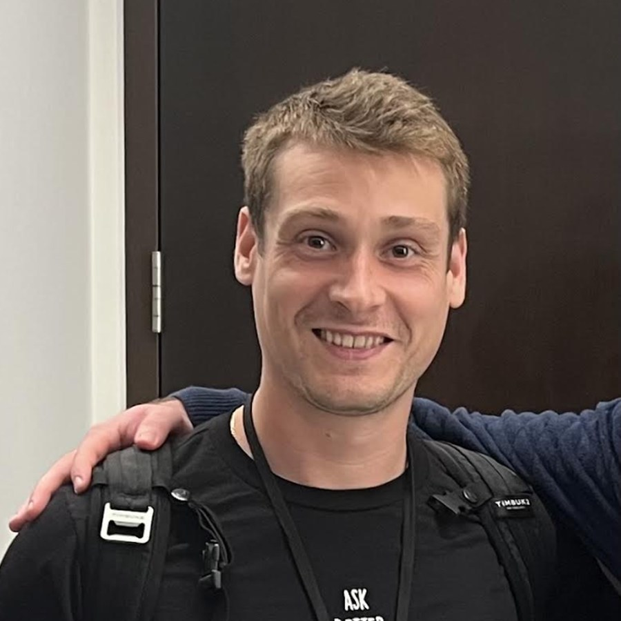

01
Resident Engagement
Inviting, high-energy instruction encourages residents to participate rather than simply observe.
Premium resident engagement programming
Professionally led dance and wellness experiences that bring energy, laughter and genuine human connection to senior living communities.
More than entertainment
Every experience is thoughtfully designed to combine accessible movement, familiar music, laughter and meaningful social interaction—while making programming simple for your team.
Inviting, high-energy instruction encourages residents to participate rather than simply observe.
Every session can be adapted for seated, standing or mixed-mobility participation.
Shared music and movement create natural opportunities for laughter, confidence and connection.
We arrive prepared with professional audio equipment, music and a microphone when needed.
Resident Dance & Wellness Programs
Choose a one-time experience or build an ongoing program around your residents, calendar and community culture. Customized pricing is available for nonprofits and multi-site organizations.
Engaging choreography tailored to seated and mixed-mobility groups.
Expressive movement inspired by iconic stages and unforgettable show tunes.
Familiar favorites that spark recognition, participation and joyful nostalgia.
Accessible rhythms and styles introduced in a welcoming, confidence-building way.
Seasonal programming and custom themes designed around your event calendar.
Consistent weekly, twice-monthly or monthly programming with an annual commitment.
Tailored to your community
Inclusive by design
The people behind the experience
Head Instructor & Co-Founder
Sidney brings more than a decade of experience teaching dancers of all ages and abilities—from first-time movers to professional performers. She teaches at renowned New York City studios, including Broadway Dance Center, and is known for creating high-energy, welcoming classes where every participant feels successful.
Her warmth, humor and infectious enthusiasm turn each session into an experience filled with movement, laughter and genuine connection.

Co-Founder & Community Partnerships
After years building customer relationships in the technology industry, Jonah was inspired to create something with a more personal impact after seeing firsthand how meaningful movement and social engagement were for his 84-year-old father.
Today, Jonah works closely with activity and life-enrichment teams to make exceptional resident programming simple, reliable and tailored to each community.
A premium community partner
Our instructors are selected not only for their professional dance backgrounds, but for their ability to connect with older adults, adapt in the moment and create an atmosphere residents want to return to.
What community leaders say
Sidney’s classes are known for bringing out participation, laughter and connection across a wide range of resident abilities.
Sidney has an incredible ability to connect with residents of every ability level. Even residents who normally choose to observe found themselves smiling, moving and participating. Her energy is contagious, and our residents were talking about the class for days afterward.
Activity DirectorAssisted Living Community · Manhattan
Finding quality programming that truly engages residents can be challenging. Sidney made it effortless. She created an environment where everyone felt comfortable participating, and her warmth immediately put residents at ease.
Life Enrichment DirectorMemory Care Community · Brooklyn
We have hosted many movement instructors over the years, but Sidney’s combination of professionalism, patience and enthusiasm made this one of our highest-attended wellness programs. Residents were already asking when she would be back.
Recreation DirectorIndependent Living Community · Queens
Our residents left the class energized and smiling. Sidney adapts naturally to every participant, creating an experience that feels inclusive, joyful and genuinely meaningful. It was exactly the type of programming we hope to provide.
Activities CoordinatorSkilled Nursing Community · Bronx
Frequently asked questions
Have a question that is specific to your residents or facility? We are happy to build a program around your needs.
Each session is 60 minutes and blends professionally led dance, accessible movement, music, laughter and socializing.
No. Programs are designed to feel welcoming and successful for complete beginners as well as residents with prior dance experience.
Yes. Every program can be adapted for seated, standing or mixed-mobility participation.
Yes. We serve independent living, assisted living, memory care, skilled nursing, adult day programs, senior centers and other senior communities.
We bring our own music and professional speaker. A microphone is also available to support residents who may have difficulty hearing.
Absolutely. Programs can be customized around Motown, Broadway, Latin dance, holidays, specific decades and other themes.
We create a custom proposal based on total community residency, program frequency and any special requirements. Customized options are available for nonprofits and multi-site organizations.
Serving New York City and the tri-state area
Tell us about your residents, your goals and the kind of experience you want to create. We will recommend a program and prepare a customized proposal.